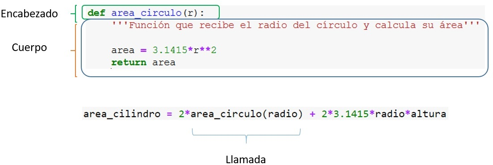

Funciones¶
Autores: Rogelio Mazaeda, Félix Miguel Trespaderne.
Contenidos¶
Introducción
Definición de funciones
Tipos de funciones según sus parámetros de entrada y valores devueltos
Funciones y tratamiento de excepciones
Introducción¶
En los temas previos ya hemos tenido oportunidad de trabajar con funciones. En este tema aprenderemos a definir y utilizar funciones creadas por nosotros.
A lo largo del tiempo y en diferentes lenguajes el concepto de función aparece definido también por otros nombres: subprograma, subrutina o procedimiento son los más habituales y con diferentes matices denotan lo mismo.
Una función es un conjunto de instrucciones al que se asigna un nombre, opcionalmente parámetros de entrada y de salida, y que puede ser llamada desde otras partes de un programa para realizar una tarea concreta.
La necesidad de las funciones¶
Los lenguajes de programación utilizan los recursos que brinda el hardware del ordenador: la capacidad de codificar diferentes tipos de datos y la posibilidad de realizar sobre ellos operaciones aritméticas y lógicas.
Las operaciones que el ordenador brinda de forma nativa, son bastante elementales y no van mucho más allá de:
la capacidad de realizar sumas, restas, multiplicaciones y divisiones, etc.
controlar el flujo del programa modificando la ejecución secuencial de las sentencias mediante la utilización de condicionales y bucles.
De manera que la realización de todo el resto de complicadas operaciones que sabemos que son capaces de realizar los programas de ordenador deben ser construidas a partir de esas operaciones básicas.
Cuando hemos utilizado los operadores más sencillos en Python (suma, resta, etc.), el intérprete traduce los comandos de alto nivel dados por el programador y usa, casi directamente, las funcionalidades del hardware.
Por tanto, a la hora de hacer operaciones más complejas, estas tienen que ser creadas a partir de esos bloques elementales implementando procedimientos más elaborados. Python y otros lenguajes brindan la posibilidad de agrupar estos bloques de instrucciones en forma de una función, para su posterior invocación de forma sencilla.
Un ejemplo usando funciones de biblioteca¶
La función es entonces el recurso que el lenguaje de programación brinda para implementar esos subprogramas. Ya hemos utilizado muchas funciones, algunas intrínsecas y otras disponibles en módulos como el módulo math.
Por ejemplo, supongamos que queremos determinar el siguiente cociente:
\begin{align} \y & = \frac{1-{{sin(x/4)}{cos(x)} }^4}{1+cos(x)^2} \ \end{align}
El cálculo de \(y\) se podría implementar en Python con un programa como el siguiente, que hace uso de las funciones trigonométricas sin() y cos() definidas en el módulo math:
from math import * # Desaconsejado este método de importación pero utilizado aquí para argumentar el uso de funciones
x = pi
y = (1 - sin(x/4)*cos(x)**4)/(1+cos(x)**2)
print(y)
0.1464466094067262
Se debe resaltar lo siguiente en el ejemplo anterior:
Claridad
Observad la similitud en el uso (que no equivalencia) para este caso concreto de las funciones en Python con el concepto matemático de función. La función recibe valores como argumentos y devuelve un valor que entonces participa en la evaluación del resto de la expresión.
Abstracción
Como usuarios de las funciones
sin()ycos()no sabemos cómo están implementadas. Podríamos aventurar que es posible que la implementación de las mismas recurra a la expansión de series que converjan a las funciones requeridas, con una precisión alta pero finita. Pero el hecho cierto es que no lo sabemos, y tampoco nos interesa para utilizarlas: evidentemente hay que dar un salto de fe y confiar en que sean correctas dentro de los límites de la precisión que aseguran.
Reutilización
Hemos utilizado dos veces la función
cos()y una elsin(). Podemos imaginar que utilizar más expresiones, usando estas funciones un número mayor de veces, no implicaría una dificultad mucho mayor.
Imaginemos, por el contrario, que las funciones no existieran. Y que cada vez que quisiéramos determinar el seno o coseno de un número, tuviésemos que programar los bucles y condicionales del algoritmo específico que determina el valor de estas funciones a partir de operaciones más básicas. Ciertamente, sería muy complicado resolver cualquier problema matemático sencillo. El código resultante sería enormemente difícil de entender. Por otra parte, si se decidiera cambiar la implementación del código, para utilizar otro algoritmo más preciso o eficiente, eso implicaría modificar todo el programa.
Una vez visto el ejemplo, mostramos el mismo ejemplo con la forma recomendada de usar funciones importadas de un módulo.
import math
x = math.pi
y = (1 - math.sin(x/4)*math.cos(x)**4)/(1+math.cos(x)**2)
print(y)
0.1464466094067262
Ventajas del uso de funciones¶
Las funciones brindan dos beneficios importantes de los que se pueden derivar muchos otros:
Estructura: Es un recurso que permite descomponer una tarea compleja en varias subtareas de menor entidad, que puedan ser abordables con mayores garantías de éxito.
Abstracción: Las funciones ocultan detalles tras una interfaz pública bien definida. Se hace abstracción de los detalles de implementación y lo que interesa únicamente son los valores de entrada que se le suministran y el(los) resultado(s) que ofrece.
A partir de estas dos características básicas, se derivan el resto de las ventajas que brinda el uso de las funciones:
Permiten reutilizar código sin tener que reescribirlo cada vez.
Permite el encapsulamiento del código de la función. Así, por ejemplo, una vez dado por válido el código interno de una función, los errores de un programa no serán imputables a la implementación interna de la función.
La implementación interna puede cambiar sin que el programador que use esas funciones tenga que preocuparse de ello.
Hace que el código resultante sea más claro y mantenible.
Las funciones brindan el mecanismo para dividir un problema grande en subproblemas pequeños, acotando la interacción entre los mismos a los datos intercambiados a través de su interfaz pública.
Es el mecanismo ideal para permitir la colaboración entre varios programadores: una vez puestos de acuerdo en la interfaz, cada cual tiene la libertad de programar la solución a los subproblemas parciales sin temor a que le afecte lo hecho por otros programadores (siempre que el resultado brindado sea el correcto).
Pautas de diseño de una función¶
Las características que deben prevalecer a la hora de diseñar una función son aquellas que refuerzan el hecho de que las funciones son abstracciones.
Una función como abstracción debe centrarse en 3 propiedades:
Su dominio, conjunto de valores que pueden tomar sus argumentos de entrada.
Su rango, conjunto de valores que puede devolver.
Su propósito, la relación existente entre los valores de entrada y los de salida, así como los posibles efectos colaterales que puedan existir.
Cómo se logran las salidas a partir de las entradas queda oculto, ese el mecanismo de la abstracción.
Para lograr reforzar el mecanismo de abstracción de una función hay algunas pautas que son de ayuda:
Cada función debe tener un único propósito. Es el principio de responsabilidad única.
El objetivo perseguido con la función debería ser fácilmente identificado con un nombre corto.
Si una función hace múltiples tareas de forma consecutiva, debería rehacerse en múltiples funciones.
No te repitas (DRY, Don’t repeat yourself).
Si un fragmento de código aparece varias veces repetido, es una buena oportunidad para darlo un nombre e invocarlo múltiples veces.
Las funciones deben ser generales.
No tiene sentido, por ejemplo, definir una función específica para elevar un número a la quinta, cuando podemos definir con carácter general, una función que eleve un número a cualquier exponente.
Definición de funciones¶
Al acto de utilizar una función, tal y como hemos venido haciendo hasta ahora con las funciones nativas (built-in) y también con las de biblioteca, se le conoce con el nombre de llamar o invocar a la función.
Aprenderemos a continuación cómo definir nuestras propias funciones con algunos ejemplos sencillos.
# Primero definimos la función, especificando su nombre y sus parámetros
def area_circulo_v1(r):
print("Área del círculo de radio {} es {}.".format(r, 3.1415*r**2))
# El estilo PEP 8 recomienza dejar dos líneas en blanco después de una función
# Ahora comienza el programa principal: la primera línea ejecutable es diametro = 10
diametro = 10
area_circulo_v1(diametro/2)
Área del círculo de radio 5.0 es 78.53750000000001.
Observe en lo anterior los dos momentos del trabajo con las funciones, la definición y la llamada:
Definición:
def area_circulo_v1(r):
print("Área del círculo de radio {} es {}.".format(r, 3.1415*r**2))
Debe aparecer antes de la primera llamada a la función definida y está formada por dos partes, el encabezado y el cuerpo: - Encabezado:
def area_circulo_v1(r):
Se utiliza la palabra reservada `def` seguida del identificador que da nombre a la función, `area_circulo_v1` en el ejemplo. Le sigue entre paréntesis (obligatorios) la lista de **parámetros formales**, que puede estar vacía. En el ejemplo, consta de un sólo parámetro formal al que hemos identificado dentro de la definición de la función con el nombre `r`.
Note que, al definir la función, todavía no se ejecuta el código que ella representa, aunque aparezca primero dentro de la secuencia del programa.
- **Cuerpo**:
print("Área del círculo de radio {} es {}.".format(r, 3.1415*r**2))
Después del encabezado, se tiene el cuerpo de la función, que en este caso ocupa una sola línea, con una sentencia que a su vez _invoca_ a la función nativa `print()`. Se debe notar que, de nuevo, Python exige el *sangrado* apropiado para identificar el cuerpo de la función. En este ejemplo, la función no *devuelve* ningún valor.
Llamada(s):
area_circulo_v1(diametro/2)
Se realiza escribiendo el nombre de la función, seguido obligatoriamente de los paréntesis con los parámetros reales (en este caso uno) que se le pasarán a la misma. Aquí el parámetro real se obtiene evaluando la expresión indicada.
A tener en cuenta:
Antes de llamar a una función, esta debe haber sido definida en el programa.
La ejecución de los encabezados (no del cuerpo) de las funciones se realiza para crear los objetos que representan a las funciones, La primera sentencia “útil” que se ejecuta es la primera sentencia del programa principal. Programa principal es el conjunto de todas las sentencias que no están incluidas dentro del cuerpo de ninguna función.
Si la función tiene parámetros de entrada, a la hora de llamar a la función se determinan los valores de los parámetros reales, evaluando las expresiones correspondientes (en el ejemplo se evalúa
diametro/2). El valor del parámetro real resulta asociado al parámetro formal o argumento de la función (en este casor).
La función anterior es correcta. Sin embargo, a la hora de programar funciones, se debe buscar que están sean lo más generales posible, de forma que puedan ser reusadas en diferentes circunstancias. La función anterior no es muy flexible, puesto que siempre imprime en pantalla el resultado y, probablemente, no en todas las ocasiones ese es el comportamiento que se desea. Además, tal y como está, como la función no devuelve nada, ella no puede participar en otras expresiones.
Desde el punto de vista de la ingeniería del software esta función viola el principio de responsabilidad única: es deseable que una función realice una única cosa. En nuestro desafortunado ejemplo, nuestra función tiene dos responsabilidades: calcular el área de un círculo e imprimir su valor por pantalla. También, bien mirado, viola el principio de generalidad: no en todos los casos en que quiera calcular el área del círculo, se desea imprimir el resultado por pantalla.
Una implementación más general, es la que se muestra a continuación.

# Primero definimos la función, especificando su nombre y sus parámetros
def area_circulo(r):
'''Función que recibe el radio del círculo y calcula su área'''
area = 3.1415*r**2
return area
# Programa principal
# Ahora se invoca o llama la función, pasando el argumento real
# Además, el valor devuelto participa en la expresión
radio = float(input("Diga el radio: "))
altura = float(input("Diga la altura: "))
area_cilindro = 2*area_circulo(radio) + 2*3.1415*radio*altura
print('El área lateral de un cilindro de radio {} y altura {} es {}.'.format(radio, altura, area_cilindro))
---------------------------------------------------------------------------
StdinNotImplementedError Traceback (most recent call last)
<ipython-input-4-b6be4875fcdb> in <module>
11 # Además, el valor devuelto participa en la expresión
12
---> 13 radio = float(input("Diga el radio: "))
14 altura = float(input("Diga la altura: "))
15
C:\Anaconda3\lib\site-packages\ipykernel\kernelbase.py in raw_input(self, prompt)
856 if not self._allow_stdin:
857 raise StdinNotImplementedError(
--> 858 "raw_input was called, but this frontend does not support input requests."
859 )
860 return self._input_request(str(prompt),
StdinNotImplementedError: raw_input was called, but this frontend does not support input requests.
Ahora el encabezamiento es idéntico pero el cuerpo de la función consta de dos sentencias (líneas 5 y 6), sangradas como exige la sintaxis de Python.
La primera sentencia asigna a la variable
areael resultado de evaluar la expresión a su derechaLa segunda sentencia utiliza la palabra reservada
returnpara devolver el contenido deareaal código que haya invocado a la función.
Es importante entender que area dentro de la definición de la función da nombre a una variable local que solo está definida y accesible dentro de la función area_circulo(). El identificador r de nuevo sirve para nombrar el parámetro formal, que igualmente sólo está definido dentro de la función.
Luego aparecen las sentencias que se ejecutarán primero de forma secuencial (el programa principal), la asignación a las variables radio y altura de los valores que el usuario introduzca por teclado, para luego evaluar la expresión que asigna a una nueva variable, area_cilindro, el resultado de evaluar la expresión a su derecha. Ahora, como la función area_circulo() devuelve un valor, la llamada a dicha función, puede participar de la expresión en la que se calcula el área lateral del cilindro. Véase que, esta forma de utilizar la función que acabamos de definir, no difiere de lo ya visto en temas anteriores o del ejemplo del inicio de este documento con las funciones de biblioteca cos() y sin().
Al evaluar la expresión, se procede siguiendo las reglas de precedencia de los operadores implicados. Primero, cuando se intenta realizar el primer producto, el intérprete de Python comprende que necesita antes evaluar la función area_circulo(), con lo que se detiene la evaluación de la expresión para invocar a la función, asociando el contenido de la variable radio (argumento real) al parámetro formal r de la definición de la función. Tras terminar la ejecución, la función devuelve el valor del área del circulo contenida en la variable local area, y dicho valor es recibido en el programa principal para proceder con la evaluación del resto de la expresión.
Nótese que las funciones definidas siguiendo la pauta de esta segunda versión de area_circulo() tienen un comportamiento similar a las funciones matemáticas: a cada valor del dominio de definición (cada valor del parámetro formal r) le corresponde un único valor de la imagen (la salida que se logra mediante la sentencia return) y que además este valor siempre es el mismo.
Tipos de funciones según sus parámetros de entrada y valores devueltos¶
Funciones sin parámetros de entrada¶
def intro():
print('Este código sólo imprime este mensaje.')
intro()
intro()
Este código sólo imprime este mensaje
Este código sólo imprime este mensaje
Las funciones pueden carecer de parámetros de entrada. En la mayoría de los casos, se trataría de un tipo de función conocida como impura, debido a que ocasiona efectos colaterales (side effects). Observe que el único objetivo en este caso es sacar un aviso por pantalla, ¡que es un efecto colateral!. En el tema de ampliación de funciones abordaremos este aspecto con algo más de detenimiento. Pueden existir funciones puras sin parámetros de entrada y sin cambios colaterales: la función trivial que no hace nada.
def funcion():
pass
En todo caso, los paréntesis deben ser obligatoriamente utilizados tanto en la definición como en cada una de las llamadas a la función.
Funciones que no devuelven valores mediante return¶
El caso del ejemplo anterior, también ejemplifica a las funciones que no contienen la sentencia return.
Este tipo de funciones, al ser utilizadas incorrectamente en contextos en que se espera un valor devuelto (al realizar composición de funciones o en sentencias de asignación), devuelven el valor especial None que indica la ausencia de un valor válido.
Por ejemplo:
a = intro()
print(a)
Este código sólo imprime este mensaje
None
Funciones con más de un parámetro¶
Las funciones pueden tener más de un parámetro formal. Tomando como referencia el ejemplo ya visto, definamos una función que reciba el radio y la altura de un cilindro y devuelva su área lateral.
# Primero definimos la función, especificando su nombre y sus parámetros
def area_cilindro(r, h):
pi = 3.14159
area = 2*pi*r**2 + 2*pi*r*h
return area
area_c = area_cilindro(1, 4.5)
print('El área lateral del cilindro es {}.'.format(area_c))
El área lateral del cilindro es 34.55749
Note que los parámetros formales de area_cilindro() ahora son dos, representando el radio (r) y la altura (h). Por simplicidad, invocamos la función pasando como parámetros reales dos valores literales.
Obsérvese la correspondencia posicional entre los parámetros formales y los reales: la constante literal 1 será copiada en el primer parámetro formal r y la constante 4.5 en el segundo h.
Funciones que devuelven más de un parámetro¶
En Python, las funciones pueden devolver mediante la sentencia return un número arbitrario de valores separados por coma. Esta característica es una novedad del lenguaje que lo diferencia de otros como el C/C++.
Por ejemplo:
def min_max(lista):
'''Devuelve el mínimo y el máximo de la lista que recibe como argmento'''
mn = mx = lista[0]
for elem in lista[1:]: #[1:] evita comparar con el índice 0
if mn > elem:
mn = elem
if mx < elem:
mx = elem
return mn, mx # Devolvemos una tupla
lista_prueba = [1, 10, 2, -3, 6, 8]
mn, mx = min_max(lista_prueba) # Desempaquetado de la tupla
print('Min: ', mn, 'Max: ', mx)
Min: -3 Max: 10
Observe que en el ejemplo anterior, el parámetro que espera la función min_max() es de tipo lista. Este ejemplo, además, ilustra mejor el hecho de que las funciones deben ser entendidas como subprogramas, capaces de utilizar todas las posibilidades vistas: definir sus propias variables, utilizar estructuras de control de flujo como condicionales y bucles, etc.
La sentencia return devuelve el mínimo y máximo valor de la misma, creando una tupla.
En la línea en que se realiza la llamada, se asigna el resultado a dos variables, desempaquetando la tupla.
Especificando el nombre de los parámetros¶
Python permite especificar los nombres de los parámetros formales a la hora de invocar a la función.
area_c = area_cilindro(1, h=4.5)
print("El área lateral del cilindro", area_c)
El área lateral del cilindro 34.55749
area_c = area_cilindro(r=1, h=4.5)
print("El área lateral del cilindro", area_c)
Por supuesto, no se permite que un parámetro que no tenga nombre, argumento posicional, esté a la derecha de un argumento con nombre.
area_c = area_cilindro(r=1, 4.5)
print("El área lateral del cilindro", area_c)
File "<ipython-input-10-7328e50cc47a>", line 1
area_c = area_cilindro(r=1, 4.5)
^
SyntaxError: positional argument follows keyword argument
Poder especificar nombres permite que los parámetros reales pueden ser enviados a la función en cualquier orden.
area_c = area_cilindro(h=4.5, r=1)
print("El área lateral del cilindro", area_c)
El área lateral del cilindro 34.55749
Parámetros con valores por defecto¶
En ocasiones resulta útil definir funciones para las que uno o varios parámetros tengan valores por defecto.
Supongamos, por ejemplo, que hacemos una función para garantizar que el valor que se pasa como argumento está entre dos límites dados:
si lo está, devuelve el valor tal cual.
si no lo está, devuelve el límite superior o inferior, según el caso.
Se sabe además que, en la aplicación de que se trata, el rango de valores que interesa normalmente suele ser el [0,1]. Una implementación posible de dicha función es la que se muestra:
def limita(valor, inf=0.0, sup=1.):
'''Devuelve valor si inf<valor<sup.
Si valor<inf devuelve inf.
Si valor>sup devuel sup'''
if inf <= valor <= sup:
return valor
elif valor > sup:
return sup
else:
return inf
# con límites por defecto
valor = float(input('Deme entero: '))
print('Valor limitado', limita(valor))
# con un límite cambiado: inf -> -1
valor = float(input('Deme entero: '))
print('Valor limitado', limita(valor, -1))
# con un límite cambiado: sup -> 5
valor = float(input('Deme entero: '))
print('Valor limitado', limita(valor, sup=5))
# con los dos límites cambiados: inf -> -1, sup -> 5
valor = float(input('Deme entero: '))
print('Valor limitado', limita(valor, -1, 5))
Deme entero: 1
Valor limitado 1.0
Deme entero: 1
Valor limitado 1.0
Deme entero: 1
Valor limitado 1.0
Deme entero: 1
Valor limitado 1.0
Observe que, en el encabezado de la definición de la función, a los parámetros formales infy sup se les asignan respectivamente los valores 0.0 y 1.0. Esto significa que, si esos parámetros no son utilizados (no se les pasa un valor o parámetro real) durante la llamada a la función, se utilizarán en el cuerpo de la misma esos valores por defecto.
Esto es lo que ocurre en los tres primeros ejemplos de la llamada a la función limita().
En la tercera llamada a la función, se requiere cambiar el límite superior solamente. Para estos casos, se puede utilizar una llamada a función que utiliza, no la posición del argumento como criterio de emparejamiento de los parámetros reales a formales, sino utilizar directamente el nombre del parámetro formal y el signo = para pasar el parámetro real. De no hacerlo así, y utilizar el paso de parámetro posicional, habría que haber utilizado una llamada a función como la que se muestra a continuación, perdiendo la ventaja de los parámetros por defecto:
limita(valor, 0, 5)
Funciones y tratamiento de excepciones¶
El tratamiento estructurado de excepciones y el enfoque EAFP (Easier to Ask Forgiveness than Permission), visto con anterioridad, alcanza su mayor utilidad cuando es aplicado conjuntamente con las funciones.
Veamos un ejemplo que implementa una función clónica del método index() de las listas.
# Función clónica del método index() de las listas
def indice(lista, valor):
for i, x in enumerate(lista):
if x == valor:
return i
raise ValueError('{} is not in list.'.format(valor))
lista = [-5, 1, 3, 4, 12, 21, 23, 34, 43, 123]
try:
valor = 0
print('{} está en la posición {} de la lista {}.'.format(valor, indice(lista, valor), lista))
except ValueError as error:
print(error)
# Usando el método index()
try:
valor = 0
print('{} está en la posición {} de la lista {}.'.format(valor, lista.index(valor), lista))
except ValueError as error:
print(error)
0 is not in list.
0 is not in list
La función indice() utiliza el mecanismo de excepciones para comunicar la existencia de un error que lanza una excepción ValueError, utilizando la sentencia raise. Esta excepción será manejada por el primer bloque try: ... except: que englobe la llamada a la función.
Nótese que una excepción termina inmediatamente el hilo de ejecución de la función. Veamos un ejemplo en el que dividimos valor por valor dos listas. La idea es que si un valor de la lista denominador es nulo, asignemos el valor Not a number nan.
Para el resto de excepciones, será el ususario de la función quien deba manejarlas:
Las listas tienen tamaños diferentes
Datos incompatibles entre sí
# Función que divide valor por valor dos listas
def divide_dos_listas_entre_si(lista_num, lista_den):
lista_coc = []
for i in range(len(lista_num)):
try:
lista_coc.append(lista_num[i]/lista_den[i])
except ZeroDivisionError:
lista_coc.append(float('nan'))
return lista_coc
lista_num = [-5, 1, 3, 4, 12, 21, 23, 34, 43, 123]
lista_den_1 = [1]
lista_den_2 = [-5, 0, 'a', 4, 12, 21, 23, 34, 43, 123]
lista_den_3 = [-5, 0, 3, 4, 12, 21, 23, 34, 43, 123]
try:
print(divide_dos_listas_entre_si(lista_num, lista_den_1))
except (IndexError, TypeError) as error:
print(error)
try:
print(divide_dos_listas_entre_si(lista_num, lista_den_2))
except (IndexError, TypeError) as error:
print(error)
try:
print(divide_dos_listas_entre_si(lista_num, lista_den_3))
except (IndexError, TypeError) as error:
print(error)
list index out of range
unsupported operand type(s) for /: 'int' and 'str'
[1.0, nan, 1.0, 1.0, 1.0, 1.0, 1.0, 1.0, 1.0, 1.0]